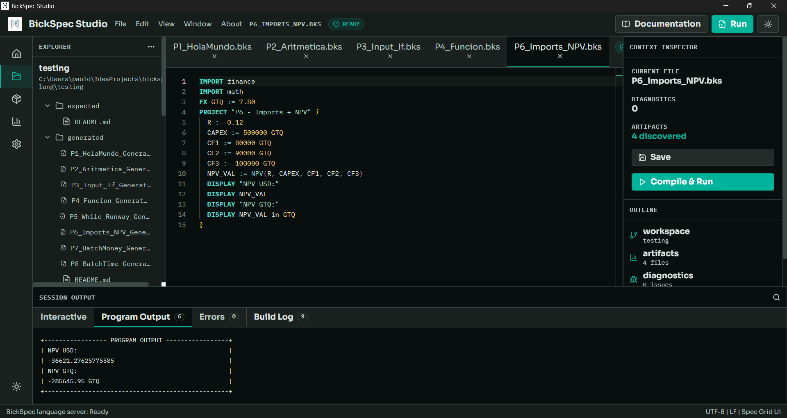
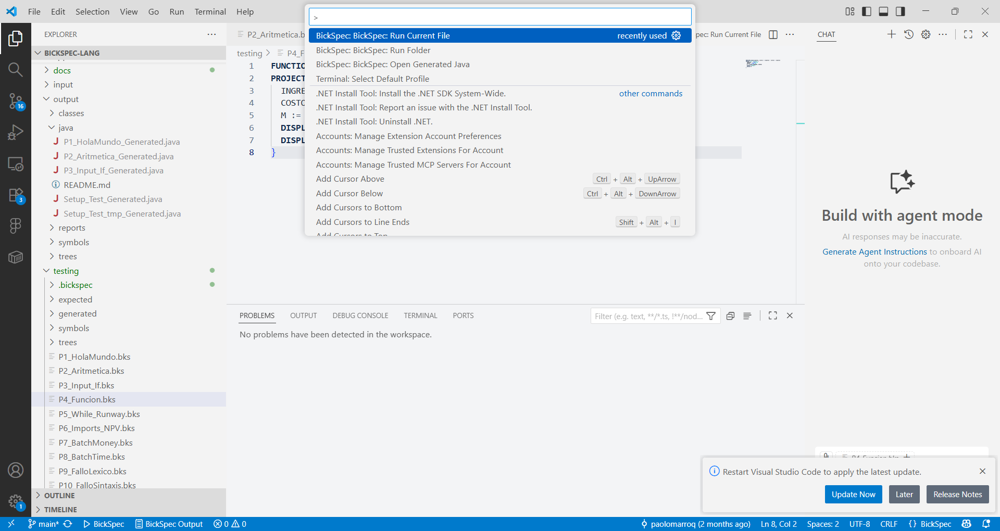
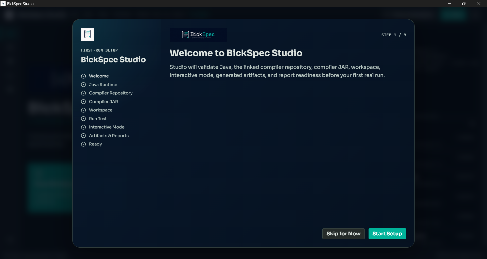
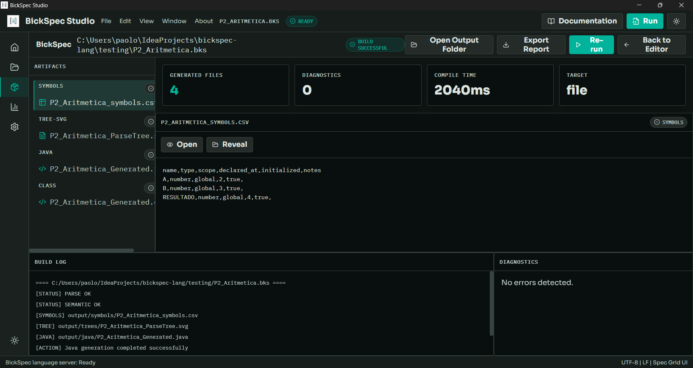

BickSpec Language / Compiler
A finance-oriented DSL compiled by the external Java/ANTLR project in bickspec-lang.
Language, Studio, and VS Code Extension
A finance-oriented DSL compiled by the external Java/ANTLR project in bickspec-lang.
Electron desktop IDE for editing, running, reviewing artifacts, and exporting reports.
Lightweight editor integration for .bks files, commands, artifacts, diagnostics, and setup.
Studio and the VS Code extension do not duplicate the compiler. Both use the real bickspec-compiler-1.0.0.jar built from bickspec-lang.
A program has zero or more IMPORT, FX, and FUNCTION declarations followed by exactly one PROJECT block.
IMPORT finance
FX GTQ := 7.80
FUNCTION margen(ingresos, costos) = (ingresos - costos) / ingresos
PROJECT "Example" {
DISPLAY "Hello"
}| Construct | Syntax |
|---|---|
| Import | IMPORT ID |
| FX rate | FX currency := numberLiteral |
| Assignment | ID := expr |
| Batch assignment | id1, id2 := expr1, expr2 |
| Output | DISPLAY expr or WRITE expr |
| Input | READ ID |
| Conditional | IF condition THEN ... ELSE ... END |
| Loops | WHILE condition DO ... END, REPEAT INT TIMES ... END |
| Function | FUNCTION name(params...) = expr |
Expressions support arithmetic, comparison/equality, logical operators, parentheses, numbers, strings, identifiers, calls, money literals, time literals, and lowercase conversion/display suffixes such as to and in. Currencies include USD, GTQ, and EUR; time units include year, month, quarter, week, and day. Comments use # or /* ... */.
CAPEX := CAPEX_GTQ to USD
DISPLAY NPV_VAL in GTQ
MESES := MESES + 1 monthID, INT, FLOAT, strings, :=, =, arithmetic + - * /, comparisons >= <= == != > <, logical && || !, braces, parentheses, comma, keywords, currencies, and time units are tokenized by the grammar.
The final JAR entry point is com.bickspec.app.TranspileRunner. Core implementation pieces include ParseRunner, BickSpecParseSupport, BickSpecSemanticVisitor, BickSpecJavaTranslatorVisitor, SymbolTable/SymbolInfo, SymbolTableCsvExporter, CompilerDiagnostic, SemanticResult, and ParseTreeGraphGenerator.
output/java/<Program>_Generated.javaoutput/classes/<Program>_Generated.classoutput/symbols/<Program>_symbols.csvoutput/trees/<Program>_ParseTree.svgoutput/reports/generation_summary.csvThe compiler emits LEX, SYN, SEM, and GEN families. Studio and the VS Code extension also classify build, runtime, filesystem, and link conditions at the tooling layer.
[ERROR] LEX01 - Token recognition error at: '@' at line 2:10
[ERROR] SYN01 - Mismatched input 'DISPLAY' expecting ... at line 3:4
[ERROR] SEM01 - Variable 'X' used before declaration at line 2:11
[ERROR] GEN06 - Generated Java compilation failedmvn -f app/pom.xml package
java -jar app/target/bickspec-compiler-1.0.0.jar testing/P1_HolaMundo.bks
java -jar app/target/bickspec-compiler-1.0.0.jar testingPROJECT "P1 - Hola Mundo" {
DISPLAY "Hola Mundo"
}PROJECT "P2 - Operacion aritmetica" {
A := 10
B := 3
RESULTADO := (A + B) * 2 / 5
DISPLAY "Resultado:"
DISPLAY RESULTADO
}IMPORT finance
FX GTQ := 7.80
PROJECT "P3 - Input + IF" {
DISPLAY "Ingrese tasa (0.xx):"
READ R
DISPLAY "Ingrese CAPEX en GTQ:"
READ CAPEX_GTQ
CAPEX := CAPEX_GTQ to USD
IF R < 0.20 THEN
DISPLAY "Tasa aceptable"
ELSE
DISPLAY "Tasa alta"
END
DISPLAY "CAPEX en USD:"
DISPLAY CAPEX
}FUNCTION margen(ingresos, costos) = (ingresos - costos) / ingresos
PROJECT "P4 - Funcion" {
INGRESOS := 15000 USD
COSTOS := 9000 USD
DISPLAY margen(INGRESOS, COSTOS)
}PROJECT "P5 - While (Runway)" {
DISPLAY "CASH inicial USD:"
READ CASH
MESES := 0
WHILE CASH > 0 DO
CASH := CASH - 1000
MESES := MESES + 1 month
END
DISPLAY MESES
}IMPORT finance
IMPORT math
FX GTQ := 7.80
PROJECT "P6 - Imports + NPV" {
R := 0.12
CAPEX := 500000 GTQ
CF1 := 80000 GTQ
CF2 := 120000 GTQ
CF3 := 150000 GTQ
NPV_VAL := NPV(R, CAPEX, CF1, CF2, CF3)
DISPLAY "NPV USD:"
DISPLAY NPV_VAL
}PROJECT "Payback" {
CAPEX := 1000 USD
CF1 := 300 USD
CF2 := 400 USD
CF3 := 500 USD
PB := PAYBACK(CAPEX, CF1, CF2, CF3)
DISPLAY PB
}Studio is an Electron + React + TypeScript + Vite desktop IDE using Monaco Editor. It includes syntax highlighting, snippets, file explorer, tabs, recent projects, settings, a first-run setup wizard, linked compiler-repository configuration, result views, and report exports.

Live stdin/stdout for READ programs.
Runtime output for non-interactive runs.
Structured diagnostics.
Compiler/build pipeline.
Installers are produced for Windows and macOS. Studio links to the real compiler repository rather than embedding compiler source.
BickSpec Finance DSL registers language id bickspec for .bks files, offers TextMate highlighting, snippets, a compiler output channel, status bar actions, Problems-panel diagnostics, artifact commands, a setup wizard, and integrated-terminal execution for READ programs.
| BickSpec: Run Current File | BickSpec: Run Folder |
| BickSpec: Show Compiler Output | BickSpec: Open Generated Java |
| BickSpec: Open Symbol Table CSV | BickSpec: Open Parse Tree SVG |
| BickSpec: Open Setup Wizard | BickSpec: Validate Environment |
| BickSpec: Select Compiler JAR | BickSpec: Select bickspec-lang Repository |
| BickSpec: Run Setup Test | BickSpec: Reset Setup |

mvn -f app/pom.xml package.bickspec-lang repository and validate the JAR.Resultado:
5.2
Report Preview uses real normalized run state. PDF, Excel, and CSV exports include summary data, runtime output or interactive transcript, diagnostics, artifacts, and build log. Export helpers remove the visual Program Output box and emit clean runtime lines; interactive exports use role/content rows.

bickspec-lang
└─ bickspec-compiler-1.0.0.jar
├─ BickSpec Studio
│ ├─ editor
│ ├─ interactive mode
│ ├─ artifacts
│ └─ reports
└─ VS Code Extension
├─ syntax highlighting
├─ snippets
├─ output channel
├─ diagnostics
└─ setup wizard.bks, reglas léxicas mediante expresiones regulares, gramática ANTLR4 inicial, tokens, palabras reservadas y casos de prueba base.javac, ejecución del programa generado, artifacts estructurados y JAR final del compilador..bks, syntax highlighting, snippets, comandos, output channel, diagnósticos, acceso a artifacts, terminal integrada para programas con READ y setup wizard.bickspec-lang.Install Java or select a Java executable in setup. Java 21 is recommended.
Build from the repo with mvn -f app/pom.xml package.
Select the root containing app/pom.xml and app/src, not a nested testing/output/target folder.
DOT output can still exist; SVG rendering may be unavailable until Graphviz is installed.
Use interactive mode in Studio or the integrated terminal in VS Code.
Check build log, compiler output paths, and whether generation completed.
Review Studio Errors or VS Code Problems for classified diagnostics and suggestions.
Windows may show SmartScreen; macOS may require right-click → Open during testing.